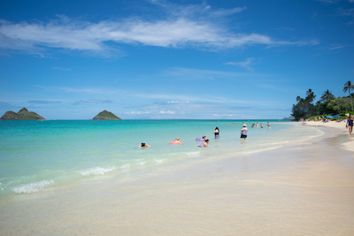

photography
Ever since I was old enough to handle a small point-and-shoot digital camera--perhaps around age 8-9--I've loved recording the world around me! Here I want to share some of this joy with you.
Check out the galleries below, categorized by location and subject matter.
Please kindly note that this website is a work in progress and that I will be adding more features and sections over time.